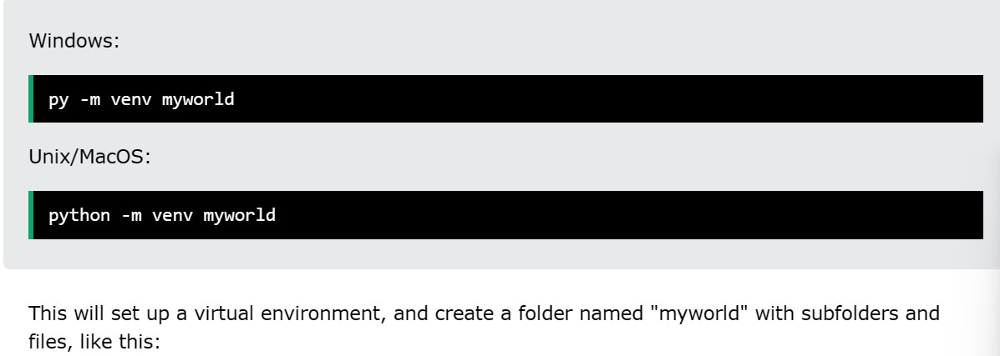
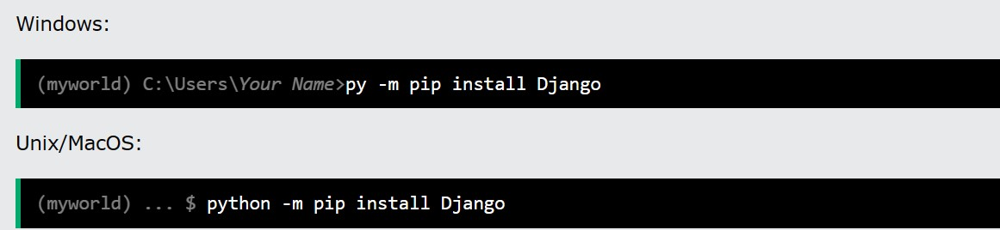
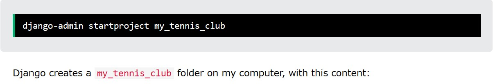
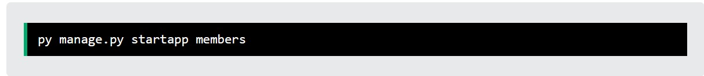

Hello Welcome to django tutorial rom for begginers
In this tutorial you will deal with
Django is a Python framework that makes it easier to create web sites using Python. Django takes care of the difficult stuff so that you can concentrate on building your web applications. Django emphasizes reusability of components, also referred to as DRY (Don't Repeat Yourself), and comes with ready-to-use features like login system, database connection and CRUD operations (Create Read Update Delete).
Virtual Environment It is suggested to have a dedicated virtual environment for each Django project, and one way to manage a virtual environment is venv, which is included in Python. The name of the virtual environment is your choice, in this tutorial we will call it myworld. Type the following in the command prompt, remember to navigate to where you want to create your project:
Install Django using pip command
Once you have come up with a suitable name for your Django project, like mine: my_tennis_club, navigate to where in the file system you want to store the code (in the virtual environment), I will navigate to the myworld folder, and run this command in the command prompt:
What is an App?
An app is a web application that has a specific meaning in your project, like a home page, a contact form, or a members database.
In this tutorial we will create an app that allows us to list and register members in a database.
But first, let's just create a simple Django app that displays "Hello World!".
Create App I will name my app members. Start by navigating to the selected location where you want to store the app, in my case the my_tennis_club folder, and run the command below.
